Tidyverse et rlang
State of the R
24-28/08/2020

Eléments généraux
Les éléments de l’introduction proviennent du site d’aide de dplyr.
L’évaluation tidy est un type d’évaluation utilisée dans tout le tidyverse. Les verbes dplyr utilise d’une manière ou d’une autre l’évaluation tidy. Il en existe essentiellement 2 formes :
arrange(),count(),filter(),group_by(),mutate(), andsummarise(): ces verbes utilisent le masquage de données (data masking). De cette facon, les variables dans des données peuvent être utilisées comme si elles étaient dans l’environnement. Plus besoin d’écriredf$varmais simplementvardans le verbe dplyr.across(),relocate(),rename(),select(), andpull(): ces verbes utilisent la sélection tidy (tidy selection) et permettent de choisir facilement des variables en se basant sur leur position, leur nom ou leur type (e.g.starts_with("x")oris.numeric()).
Ces verbes rendent l’exploration de données rapide et fluide mais ils peuvent poser des problèmes dans le cas où ils sont utilisés dans des boucles ou des fonctions.
Par exemple, une fonction qui utilise le data masking peut notamment poser problème lorsqu’elle appelle le nom d’une variable dans un tableau à partir d’une variable de l’environnement sans taper explicitement la variable du tableau (des exemples précis sont donnés par la suite). rlang fournit des outils pour écrire des codes génériques tout en utilisant dplyr. La séléction tidy est un outil complémentaire qui facilite le travaille sur les colonnes d’un jeu de données.
La suite du document donnent quelques exemple d’utilisation de rlang.
Examples d’utilisation de rlang
Tidy evaluation à l’aide de {{ et .data.
L’utilisation de fonctions du tidyverse dans des fonctions personnelles peut parfois poser problème
library(tidyverse)
theme_set(theme_bw())
data(penguins, package = "palmerpenguins")## This works
ggplot(penguins, aes(x = bill_length_mm, y = bill_depth_mm, color = species)) +
geom_point() +
ggtitle("Variable = species")
## This doesn't
my_plot <- function(var) {
ggplot(penguins, aes(x = bill_length_mm, y = bill_depth_mm, color = var)) +
geom_point() +
ggtitle(glue::glue("{var}"))
}
my_plot(species)## Error in eval(parse(text = text, keep.source = FALSE), envir): object 'species' not foundLe problème vient de l’évaluation de var dans l’appel à my_plot(): R cherche species dans l’environnement parent de la fonction plutôt que dans le contexte du data.frame penguins.
On peut remédier au problème à l’aide de l’opérateur {{ qui permet de remplacer var par species dans l’appel à ggplot via le mécanisme de quosure.
## This works
my_plot <- function(var) {
ggplot(penguins, aes(x = bill_length_mm, y = bill_depth_mm, color = {{ var }})) +
geom_point()
}
my_plot(species)
À noter qu’on obtient l’équivalent de {{ var }} en combinant enquo (conversion en “quosure” = expression + environnement) et !! (évaluation sauce “tidy”) :
## This works
my_plot <- function(var) {
ggplot(penguins, aes(x = bill_length_mm, y = bill_depth_mm, color = !!enquo(var))) +
geom_point()
}
my_plot(species)
Si on veut afficher le titre de façon programmatique, il faut ensym() (conversion en symbole de l’expression passée en argument à une fonction) pour qu’il soit reconnu comme une chaîne de caractères
## This works
my_plot <- function(var) {
ggplot(penguins, aes(x = bill_length_mm, y = bill_depth_mm, color = {{ var }})) +
geom_point() +
ggtitle(glue::glue("Variable = {ensym(var)}"))
}
my_plot(species)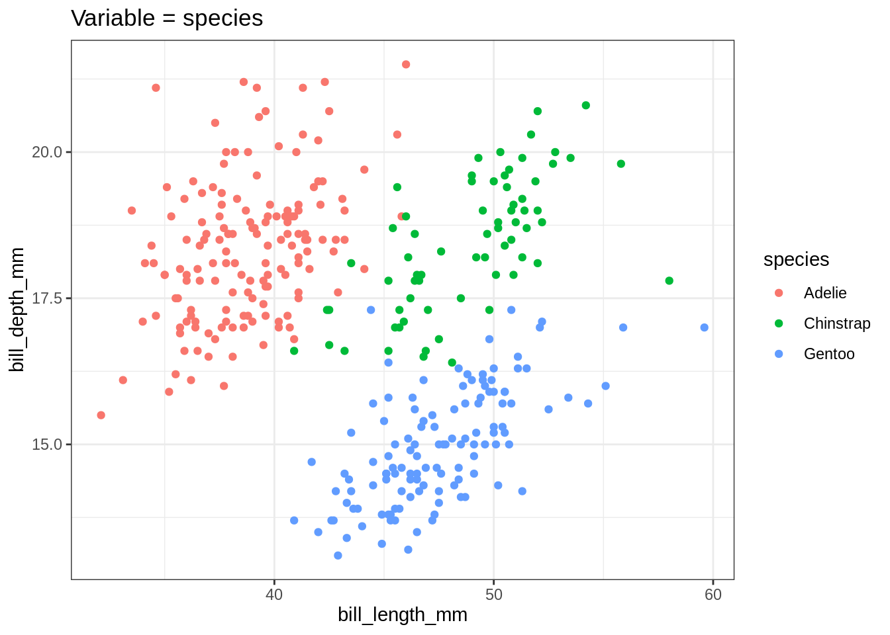
Attention, dans cet example, l’argument de my_plot() est une expression. On ne peut donc pas itérer sur les colonnes catégorielles de penguins stockées dans un vecteur de "character": ces dernières ne sont pas interprétées correctement…
cat_vars <- names(penguins)[map_lgl(penguins, is.factor)] ## [1] "species" "island" "sex"
map(cat_vars, my_plot) %>% cowplot::plot_grid(plotlist = .)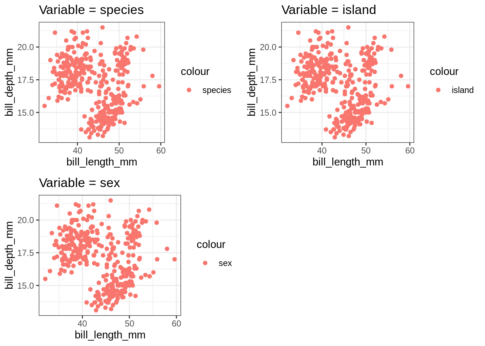
Pour que my_plot() accepte des chaînes de caractères, il faut utiliser le pronom spécial .data pour préciser que la variable doit être cherchée dans le tableau penguins.
## This works
my_plot <- function(var) {
ggplot(penguins, aes(x = bill_length_mm, y = bill_depth_mm, color = .data[[var]] )) +
geom_point() +
ggtitle(glue::glue("Variable = {var}"))
}
my_plot("species")
map(cat_vars, my_plot) %>% cowplot::plot_grid(plotlist = .)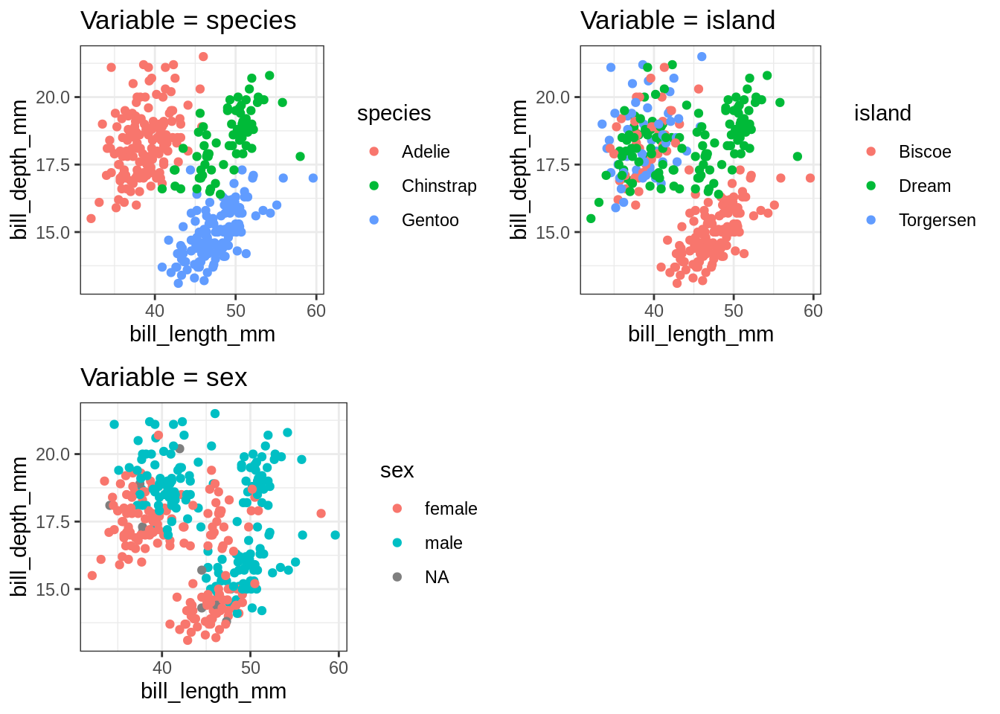
Comparaisons entre .env et .data.
Essayons de ne représenter qu’une partie du jeu de données, par exemple les manchots Adelie
ggplot(penguins %>% filter(species == "Adelie"),
aes(x = bill_length_mm, y = bill_depth_mm, color = island)) +
geom_point() +
ggtitle("Penguins of species Adelie, colored by island")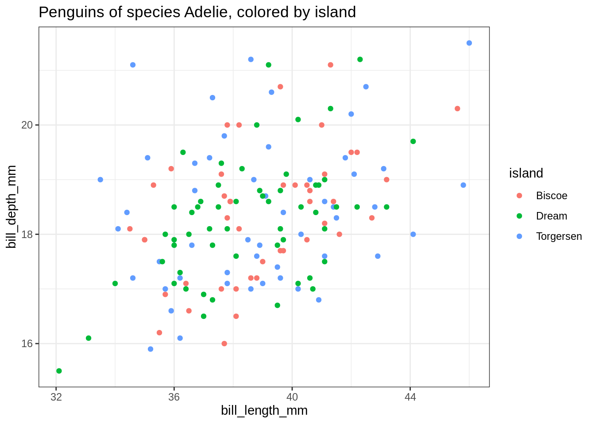
On peut essayer de fonctionaliser ce graphique
## This seems to works
my_plot <- function(species) {
ggplot(penguins %>% filter(species == species),
aes(x = bill_length_mm, y = bill_depth_mm, color = island )) +
geom_point() +
ggtitle(glue::glue("Penguins of species {species}, colored by island"))
}Mais ça ne marche pas…
my_plot("Adelie")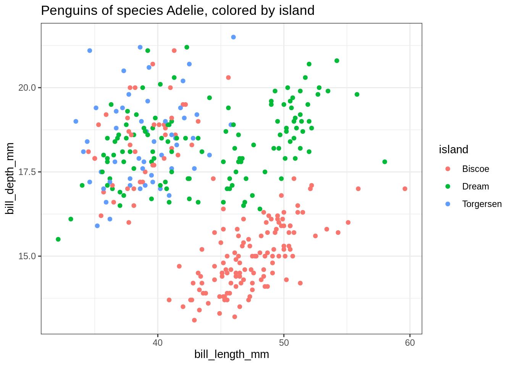
Il faut être rigoureux et distinguer la data variable species de la valeur de l’argument species. On peut renommer l’argument en .species mais c’est désagréable. Une solution élégante consiste à utiliser le pronom .env pour distinguer les deux symboles.
## This works
my_plot <- function(species) {
ggplot(penguins %>% filter(species == .env$species),
aes(x = bill_length_mm, y = bill_depth_mm, color = island )) +
geom_point() +
ggtitle(glue::glue("Penguins of species {species}, colored by island"))
}my_plot("Adelie")
On peut alors itérer sur les espèces de penguins
unique(penguins$species) %>% map(my_plot) %>% cowplot::plot_grid(plotlist = .)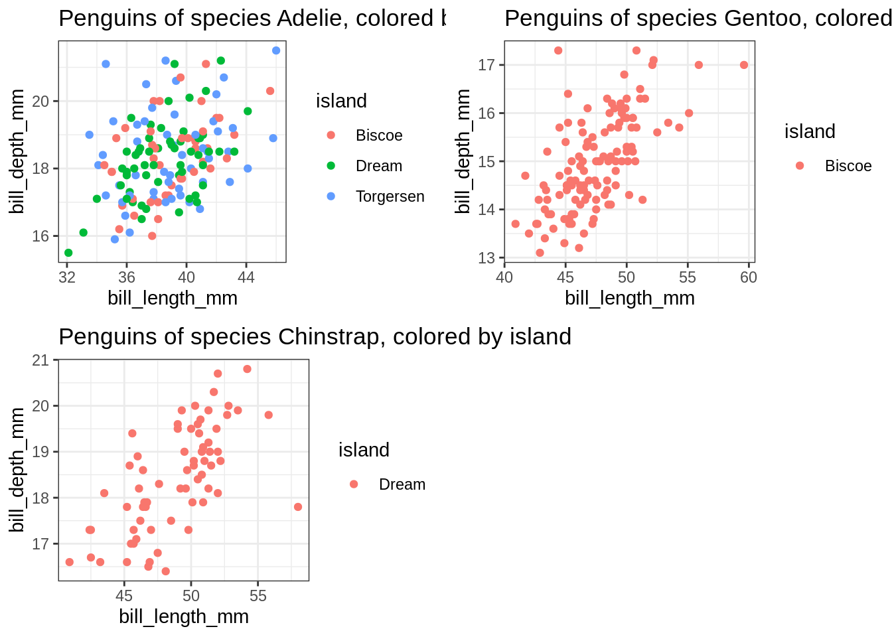
On peut évidemment combiner la sélection d’une espèce avec le coloriage par une variable catégorielle.
my_plot <- function(species, color) {
ggplot(penguins %>% filter(species == .env$species),
aes(x = bill_length_mm, y = bill_depth_mm, color = .data[[color]])) +
geom_point() +
ggtitle(glue::glue("Penguins of species {species}, colored by {color}"))
}
my_plot("Adelie", "sex")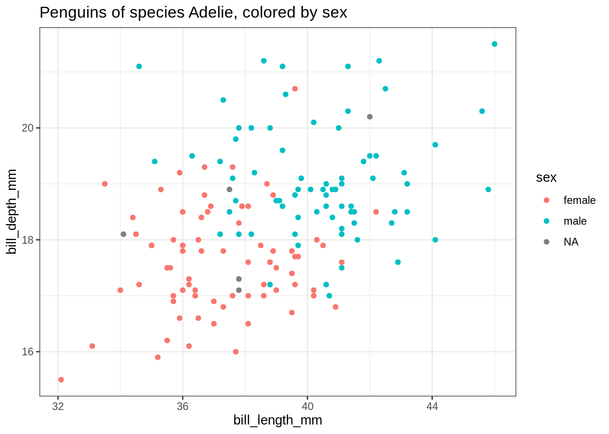
Passage d’arguments par promesse versus par nom
Les versions my_plot(var = species) et my_plot(var = "species") diffèrent dans la nature de l’argument: une expression dans le premier cas, une chaîne de caractères dans le deuxième. La première version est plus souple.
my_plot_char <- function(x, y) {
ggplot(penguins,
aes(x = .data[[x]], y = .data[[y]], color = species)) +
geom_point()
}
my_plot_char(x = "bill_length_mm", y = "bill_depth_mm")
my_plot_expr <- function(x, y) {
ggplot(penguins,
aes(x = {{x}}, y = {{y}}, color = species)) +
geom_point()
}
my_plot_expr(x = bill_length_mm, y = bill_depth_mm) Contrairement à
Contrairement à my_plot_char(), my_plot_expr() peut être utilisée avec des expressions, i.e. des transformations des variables de penguins calculées à la volée:
my_plot_expr(x = bill_length_mm - bill_depth_mm, y = bill_length_mm + bill_depth_mm)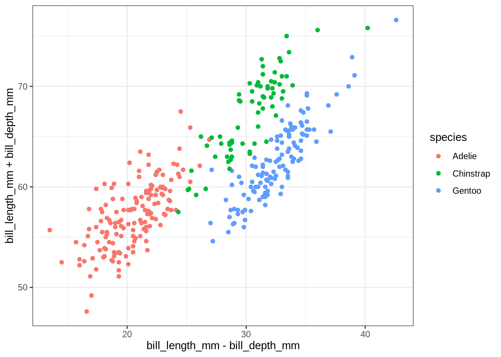
Utiliser des chaînes de caractères dans fonctions du tidyverse
On peut avoir envie d’itérer sur des variables stockées dans vecteurs de type character. C’est facile avec my_plot_char() mais légèrement plus difficile avec my_plot_expr()
var_x <- "bill_length_mm"
var_y <- "bill_depth_mm"
## Works fine
my_plot_char(var_x, var_y)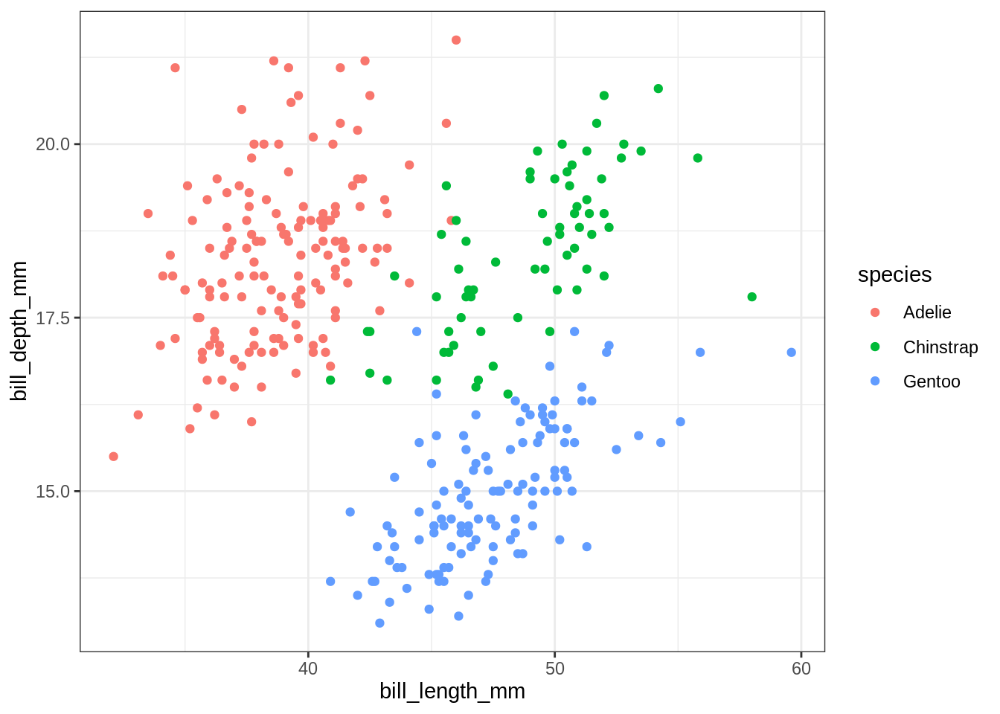
## Does not work as intended
my_plot_expr(var_x, var_y)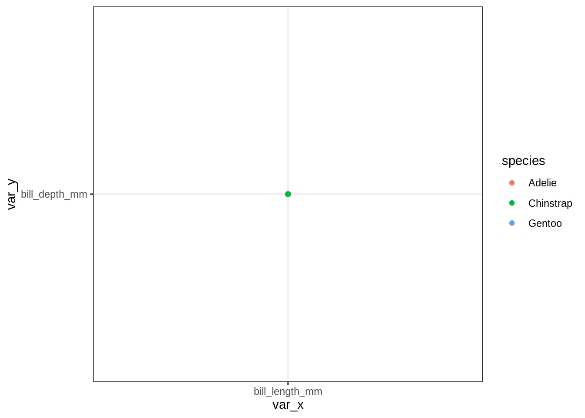
On peut néanmoins s’en sortir à l’aide du pronom .data précédemment présenté
## Works as intended
my_plot_expr(.data[[var_x]], .data[[var_y]])
Et itérer sur des tableaux
cont_vars <- c("bill_length_mm", "bill_depth_mm", "flipper_length_mm", "body_mass_g")
df <- tidyr::crossing(x = cont_vars, y = cont_vars)
plot_list <- map2(.x = df$x, .y = df$y, ~ my_plot_expr(.data[[.x]], .data[[.y]]) + theme(legend.position = "none"))
cowplot::plot_grid(plotlist = plot_list)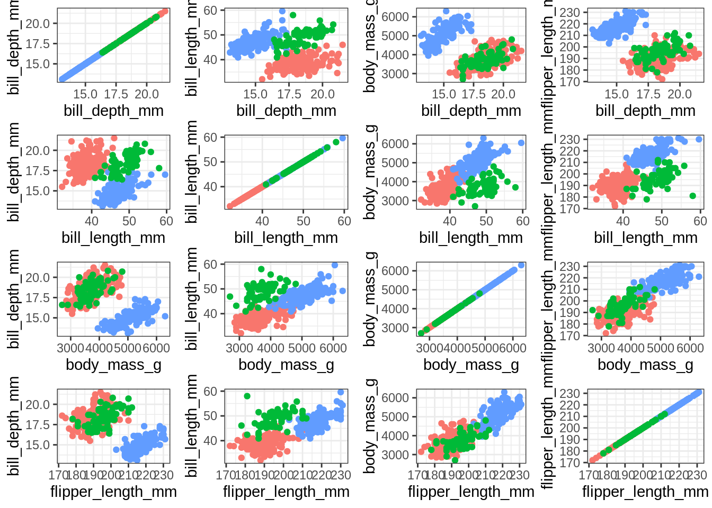
Utilisation de :=
On peut évidemment utiliser l’opérateur {{ à d’autres verbes du tidyverse:
summarize_penguins <- function(filter_condition, group, summary_var, summary_fun, ...) {
penguins %>%
filter({{ filter_condition }}) %>%
group_by({{ group }}) %>%
summarize(my_summary := summary_fun({{summary_var}}, ...))
}summarize_penguins(species == "Adelie", island, bill_depth_mm, mean, na.rm = TRUE)## `summarise()` ungrouping output (override with `.groups` argument)## # A tibble: 3 x 2
## island my_summary
## <fct> <dbl>
## 1 Biscoe 18.4
## 2 Dream 18.3
## 3 Torgersen 18.4Mais le fait de devoir spécifier dès le départ le nom de colonne est désagréable et peu informatif. L’opérateur := permet de créer des variables nommées de façon dynamique dans des verbes du tidyverse
summarize_penguins <- function(filter_condition, group, summary_var, summary_fun, ...) {
penguins %>%
filter({{ filter_condition }}) %>%
group_by({{ group }}) %>%
summarize("{{summary_var}}_{{summary_fun}}" := summary_fun({{summary_var}}, ...))
}summarize_penguins(species == "Adelie", island, bill_depth_mm, mean, na.rm = TRUE)## `summarise()` ungrouping output (override with `.groups` argument)## # A tibble: 3 x 2
## island bill_depth_mm_mean
## <fct> <dbl>
## 1 Biscoe 18.4
## 2 Dream 18.3
## 3 Torgersen 18.4Utilisation de tidyselect
Un exemple sur un jeu de données de pêche
Le jeu de données VMS_data contient les données spatialisées des captures (LE_KG), des efforts (HF) et des indices d’abondance (CPUE) par navire (aggreg_level) des chalutiers ciblant les espèces démersales (OTB_DEF) dans le golfe de Gascogne. La donnée est aggrégée à l’échelle des cellules (layer) d’une grille de résolution 0.05°. Les captures et les indices d’abondance pour chaque espèce sont en colonne.
load("data/VMS_data.RData")
VMS_data <- as_tibble(VMS_data)On peut chercher à créer une fonction représentant les captures de deux navires pour 3 espèces (la sole, le merlu, la langoustine). La fonction suivante utilise les différentes commandes vues précédemment ({{}}, .Data, .env$, :=).
plot_VMS_data <- function(data,species,unit){
data %>%
dplyr::select(aggreg_level:lati,contains(paste0(.env$unit,"_",.env$species))) %>% # aller chercher l'unité et les espèces dans l'environnement
pivot_longer(contains(paste0(.env$unit,"_",.env$species)),names_to = "species",values_to = {{unit}}) %>% # passer les colonnes valeurs en une seule colonne
mutate(species = str_remove(species, paste0(.env$unit,"_"))) %>% # modifier le nom de la colonne species
group_by(layer,long,lati,species) %>% # moyenner les valeurs par espèce par cellule
summarise("{unit}" := mean(.data[[unit]])) %>%
ggplot() + # ploter les données
geom_point(aes(x=long,y=lati,col = log(.data[[unit]]+1)),size = 0.5,shape=15) +
scale_color_gradient(low = "white", high = "red")+xlab("")+ylab("")+
coord_equal() +
theme(panel.border = element_blank(),
panel.grid.major = element_blank(),
panel.grid.minor = element_blank(),
panel.background = element_rect(fill = "skyblue"),
panel.spacing.x = unit(6, "mm"))+
facet_wrap(.~species)
}
data_2 <- VMS_data
species_2 <- c("Solea_solea","Merluccius_merluccius","Nephrops_norvegicus")
unit_2 <-"CPUE"
plot_VMS_data(data_2,species_2,unit_2)## `summarise()` regrouping output by 'layer', 'long', 'lati' (override with `.groups` argument)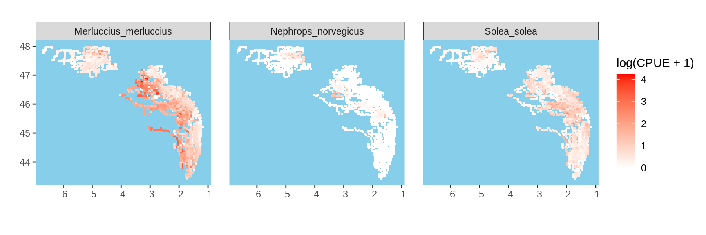